有关．显然，这要预先假定i.47关于等腰直角三角形是成立的；并且对某些有理直角三角形也是成立的事实提示，质疑一个正方形的对角线与边的比是否可以表示为整数．因而，从整体来说，我认为没有充分的理由来怀疑希腊几何的传统说法（关于这个命题可能早先在印度发现的说法将在后面讨论）．毕达哥拉斯是首先引入定理i.47并且给出一般证明的人．
有关．显然，这要预先假定i.47关于等腰直角三角形是成立的；并且对某些有理直角三角形也是成立的事实提示，质疑一个正方形的对角线与边的比是否可以表示为整数．因而，从整体来说，我认为没有充分的理由来怀疑希腊几何的传统说法（关于这个命题可能早先在印度发现的说法将在后面讨论）．毕达哥拉斯是首先引入定理i.47并且给出一般证明的人．1.点是没有部分的．
2.线只有长度而没有宽度．
3.线[2]的两端是点．
4.直线是它上面的点一样地平放着的线．
5.面只有长度和宽度．
6.面的边缘是线．
7.平面是它上面的线一样地平放着的面．
8.平面角是在一平面内但不在一条直线上的两条相交线相互的倾斜度．
9.当包含角的两条线都是直线时，这个角叫做直线角．
10.当一条直线和另一条直线交成的邻角彼此相等时，这些角的每一个叫做直角，而且称这一条直线垂直于另一条直线．
11.大于直角的角叫做钝角．
12.小于直角的角叫做锐角．
13.边界是物体的边缘．
14.图形是由一个边界或几个边界所围成的．
15.圆是由一条线围成的平面图形，其内有一点与这条线上的点连接的所有线段都相等．
16.而且把这个点叫做圆心．
17.圆的直径是任意一条经过圆心的直线在两个方向被圆周截得的线段，且把圆二等分．
18.半圆是直径和由它截得的圆周所围成的图形．而且半圆的心和圆心相同．
19.直线形是由直线围成的，三边形是由三条直线围成的，四边形是由四条直线围成的，多边形是由四条以上直线围成的．
20.在三边形中，三条边相等的，叫做等边三角形；只有两条边相等的，叫做等腰三角形；各边不等的，叫做不等边三角形．
21.此外，在三边形中，有一个角是直角的，叫做直角三角形；有一个角是钝角的，叫做钝角三角形；有三个角是锐角的，叫做锐角三角形．
22.在四边形中，四边相等且四个角是直角的，叫做正方形；角是直角，但四边不全相等的，叫做长方形；四边相等，但角不是直角的，叫做菱形；对角相等且对边也相等，但边不全相等且角不是直角的，叫做斜长方形；其余的四边形叫做不规则四边形．
23.平行直线是在同一平面内的一些直线，向两个方向无限延长，在不论哪个方向它们都不相交．
1.由任意一点到另外任意一点可以画一条直线．
2.一条有限直线可以继续延长．
3.以任意点为心及任意的距离[3]可以画圆．
4.凡直角都彼此相等．
5.同平面内一条直线和另外两条直线相交，若在某一侧的两个内角的和小于二直角的和，则这二直线经无限延长后在这一侧相交[4]．
1.等于同量的量彼此相等．
2.等量加等量，其和仍相等．
3.等量减等量，其差仍相等．
4.彼此能重合的物体是全等的．
5.整体大于部分．
命题47 在直角三角形中，直角所对的边上的正方形等于夹直角两边上正方形的和．
设ABC是直角三角形，角BAC是直角．
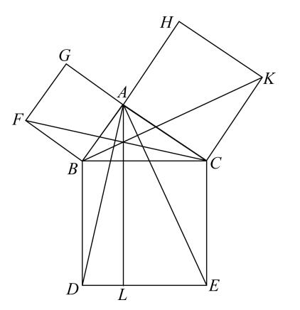
则可证BC上的正方形等于BA，AC上的正方形的和．
事实上，在BC上作正方形BDEC，且在BA，AC上作正方形GB，HC． ［i.46］
过A作AL平行于BD或CE，连接AD，FC．
因为角BAC，BAG的每一个都是直角，在直线BA上的点A处有两条直线AC，AG不在它的同一侧，所成的两邻角的和等于二直角，于是CA与AG在同一条直线上． ［i.14］
同理，BA也与AH在同一条直线上．
又因角DBC等于角FBA：因为每一个角都是直角：给以上两角各加上角ABC；
所以，整体角DBA等于整体角FBC． ［公理2］
又因为DB等于BC，FB等于BA；两边AB，BD分别等于两边FB，BC．
又角ABD等于角FBC；所以底AD等于底FC，且三角形ABD全等于三角形FBC． ［i.4］
现在，平行四边形BL等于三角形ABD的二倍，因为它们有同底BD且在平行线BD，AL之间． ［i.41］
又正方形GB是三角形FBC的二倍，因为它们又有同底FB且在相同的平行线FB，GC之间． ［i.41］
［但是，等量的二倍仍然是相等的．］
故，平行四边形BL也等于正方形GB．
类似地，若连接AE、BK，也能证明平行四边形CL等于正方形HC．
故，正方形BDEC等于两个正方形GB，HC的和． ［公理2］
而正方形BDEC是在BC上作出的，正方形GB，HC是在BA，AC上作出的．
所以，在边BC上的正方形等于边BA，AC上正方形的和．
证完
普罗克洛斯（Proclus，410—485）说：“如果我们读一些古代史，我们就可以发现他们中的某些人把这个定理归功于毕达哥拉斯，并且说有人奉献了一头牛以表彰他的发现．但是，就我而言，虽然我敬佩那些首先发现这个定理的人，但我更敬佩《原本》的作者．不只是因为他做出了一个最简单明了的证明，而且因为他在卷Ⅵ中把这个定理推广到更一般的情形．在卷Ⅵ中他证明了在直角三角形中，在斜边上的图形等于在两个直角边上的相似的且在相似位置的两个图形．”
此外，普卢塔克（Plutarch），狄俄真尼斯·莱尔修斯［Diogenes Laertius（viii.12）］以及阿瑟内乌斯［Athenaeus（x.13）］同意把这个定理归功于毕达哥拉斯，正如容吉（G.Junge）（“Wann haben die Griechen das Irrationale entdeckt?”in Novae Symbolae Joachimicae，Halle a.S.，1907）所说，这些都是后来人们的说法，而在毕达哥拉斯之后的前五个世纪的希腊文献中，没有特别指出这个或者其他特别重大的几何发现归功于他．然而，阿波罗多拉斯（Apollodorus）在“计算器（calculator）”中说存在一个“著名的命题”是由毕达哥拉斯发现的．阿波罗多拉斯的生平时间不能确定，但他至少早于普卢塔克，并且可能早于西塞罗（Cicero，M.T.公元前106—前43）．西塞罗在评论（De nat.deor.iii.C.36，§88）时似乎也没有争论这个几何发现的事实，他只是涉及奉献的故事．容吉强调普卢塔克及普罗克洛斯的话的不确定性．但是，当我阅读普卢塔克的著作时，我没有看到任何与普卢塔克的推测不协调的东西，普卢塔克毫不犹豫地接受毕达哥拉斯对这两个定理的发现，一个是关于斜边上正方形的定理，另一个是贴合面积的问题，他怀疑的只是奉献贡品给这两个定理中哪一个更合适．也有其他证据支持这个说法．这个定理与欧几里得卷Ⅱ的全部内容紧密相关，在卷Ⅱ中，最重要的东西是使用磬折形（gnomon）（亦称为曲尺或拐尺形）．磬折形是毕达哥拉斯学派都熟悉的术语，亚里士多德也把围绕着正方形（开始于1）放置磬折形的奇数以形成新的正方形归功于毕达哥拉斯（Physics iii 4，203 a 10-15）．在另一个地方（Categ.14，15 a 30）术语磬折形以同样的意义出现：“例如，当一个磬折形围着一个正方形放置时，正方形增大但不改变形状．”因此，可以断言，卷Ⅱ的主旨是毕达哥拉斯．另外，海伦（Heron，大约第3世纪）像普罗克洛斯一样，相信毕达哥拉斯给出了用整数作为边来构成直角三角形的一般规则．最后，普罗克洛斯的“概论”（summary）相信毕达哥拉斯是无理数的理论与研究的发现者．作者认为适用于可公度量的比例的算术理论也应当归功于毕达哥拉斯，它不同于欧几里得卷Ⅴ中的归功于欧多克索斯的比例论．而对于毕达哥拉斯发现无理数是没有争论的（参考the scholium No.1 to Book X.）．现在，每件事都说明无理数的发现与正方形的对角线与它的边的比有关．显然，这要预先假定i.47关于等腰直角三角形是成立的；并且对某些有理直角三角形也是成立的事实提示，质疑一个正方形的对角线与边的比是否可以表示为整数．因而，从整体来说，我认为没有充分的理由来怀疑希腊几何的传统说法（关于这个命题可能早先在印度发现的说法将在后面讨论）．毕达哥拉斯是首先引入定理i.47并且给出一般证明的人．
在这个前提下，毕达哥拉斯是如何得到这个发现的？通常认为埃及人注意到边的比是3，4，5的三角形是直角三角形．康托尔（Cantor）推断，如果我们可以接受维特鲁维乌斯（Vitruvius）的证言（ix.2），毕达哥拉斯教人们如何用长为3，4，5的东西作一个直角，这正是毕达哥拉斯开始使用的三角形．因而，如果他知道了埃及人的3，4，5三角形，他也就知道了它的性质．现在，人们相信埃及人至少在公元前2000年就知道了42+32=52．康托尔在哈亨（Kahun）12世纪新发现的纸莎草纸的碎片中找到了证据．在这个草纸中有开方，例如，16的方根是4，
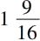
的方根是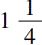
，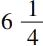
的方根是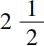
，以及下列等式：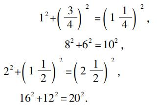
容易看出，42+32=52可以从这些等式中的每一个导出，只要同乘或同除一个数即可．埃及人知道42+32=52．但是，没有证据说明他们知道三角形（3，4，5）是直角三角形，根据最新的权威著作（T.Eric Peet，The Rhind Mathematical Papyrus，1923），在埃及的数学中没有任何东西提示埃及人知道勾股定理或者它的特殊情形．
那么，毕达哥拉斯是如何发现了一般定理？注意，3，4，5是一个直角三角形，同时42+32=52，这可能导致他考虑是否类似的关系对于一般直角三角形也成立，最简单的情形是几何地研究等腰直角三角形，在这个特殊情况下，定理的真实性容易从图形的构造看出，康托尔和阿曼（Allman）（Greek Geometry from Thales to Euclid）用一个图形证明了这个，在这个图形中，正像在i.47中一样，正方形是画在外面的，并且被对角线划分为相等的三角形；但是我认为定理的真实性更容易从比科（Bürk）（Das Ãpastamba-Šulba-Sūtra in Zeitschrift der deuts henmorgenländ.Gesellschaft，LV.，1901）所提示的印度人是如何达到这一点的一类图形看出，这两个图形画在了旁边．从图形的几何构造就可以看出等腰直角三角形具有这个性质．从算术的观点进一步研究这个事实，将导致另一个重要发现，即正方形的对角线的长用它的边表示的无理性．
无理数将在后面讨论，下一个问题是：假定毕达哥拉斯已经从几何上观察到这个定理在两种特别的三角形以及有理直角三角形中是真的，他是如何建立了它的一般性？
关于这一点没有一个确切的证据．有两条可能的线索：
（1）唐内里（Tannery）说（La Géométrie grecque）毕达哥拉斯的几何足以使他用相似三角形来证明这个定理．他没有说明用什么方式来使用相似三角形．而相似三角形的使用必须涉及使用比例，为了使这个证明是完满的，比例论也应当是完满的，即能使用到可公度的情形与不可公度的情形．欧多克索斯是第一个使比例论摆脱可公度的假设的人．因而，在欧多克索斯之前，这不可能完成，由毕达哥拉斯给出的用比例的任何证明至少都是不完满的．但是这并没有构成反对这样的假设，一般定理的真实性的发现使用这样的方式；相反地，假设毕达哥拉斯的证明使用了不完满的比例论也比另外的解释要好，像普罗克洛斯所说的欧几里得必须设计一个全新的在i.47中所做的证明．这个证明必须与比例论无关，由于按《原本》的计划，比例论在卷Ⅴ和卷Ⅵ，而勾股定理在卷Ⅱ．另外，如果毕达哥拉斯的证明只基于卷Ⅰ和卷Ⅱ的内容，那么，欧几里得就不必提供一个新的证明．
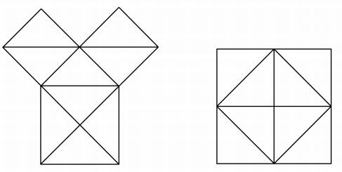
使用比例的证明可能限制在两种情形：
（a）一种方法是从三角形ABC和DBA相似开始，证明矩形CB，BD等于BA上的正方形，再从三角形ABC和DAC的相似形开始，证明矩形BC，CD等于CA上的正方形，而后把它们相加即得其结论．
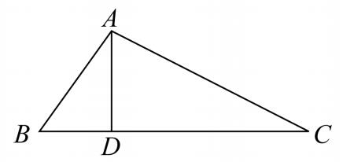
注意，这个证明在本质上与欧几里得的证明相同，仅有的区别是这两个小正方形与相应的矩形相等是由卷Ⅵ的方法推出的，而不是由卷Ⅰ中建立的同底同高的平行四边形与三角形的面积之间的关系推出的．我认为，如果毕达哥拉斯的证明已经有了，甚至在本质上是如此地与欧几里得的证明相近，那么，普罗克洛斯就应当做更多的强调，像他强调欧几里得的证明的原始性一样，或者对这个定理的证明比对这个定理的原始发现更加感到惊奇．尽管有舍朋浩尔（Schopenhauer）的无知的指责，他要求某种东西明显地就像在等腰直角三角形情形的第二个图形，并且声称欧几里得的证明是一个“下等的证明”（a mouse-trap proof），是一个平凡的证明（“Des Eukleides stelZbeiniger，ja，hinterlistiger Beweis”），但是，我认为，从整体上看，无疑用比例的证明提示了欧几里得的i.47的方法，并且转换比例方法为基于卷Ⅰ的方法只是一个令人敬佩的技巧．
（b）另一个方法如下：容易看出，由直角顶点到斜边的高把原来的三角形划分为两个相似三角形，并且它们也与原来的三角形相似，在这三个三角形中，在原来三角形中的两条直角边与原来三角形中的斜边是对应边，并且前两个相似三角形的和等于斜边上的相似三角形，由此可以推出，这个关系对画在三条边上的正方形也是真的，这是因为正方形以及相似三角形彼此之间的比等于相应边的平方比．而且，同样的事情对任意相似的直线形也成立，于是，这个证明实际上建立了欧几里得ⅵ.31的推广定理，普罗克洛斯认可这个推广定理完全是欧几里得的发现．总起来看，我认为毕达哥拉斯很可能使用了方法（a），他使用了他所知道的，即有缺陷的比例论，这个有缺陷的比例论一直用到欧多克索斯时代．
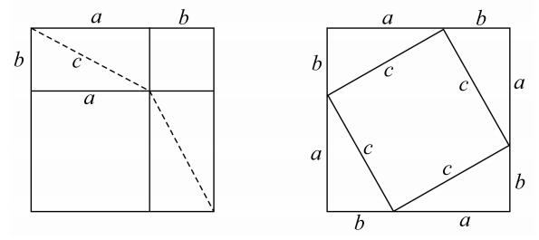
（2）我已经指出了只用欧几里得卷Ⅰ及卷Ⅱ的原理的毕达哥拉斯证明的困难．为了消除这个困难，布莱茨耐德（Bretschneider），后来还有汉克尔（Hankel）的猜想是最诱人的．根据这个猜想，我们要假定有一个像欧几里得卷Ⅱ.4的一个图形，在这个图形中，a和b分别是一个大正方形内的两个小正方形的边，a+b是大正方形的边．而后把两个剩余的部分（它们是相等的）用它们的对角线把它们分为四个相等的三角形（边为a，b，c），我们可以把这些三角形如第二个图所示的那样放置在另一个与大正方形大小相同的正方形内，于是相邻三角形的边a，b作成这个大正方形的一条边．容易看出，取掉这四个三角形后所剩的正方形一方面是边为c的正方形，另一方面是边分别为a和b的两个正方形的和．因而，c上的正方形等于分别以a和b为边的两个正方形的和．可以反对这个猜想证明的意见只能说它没有希腊人的特色，而更像印度的方法，婆什迦罗（Bhāskarq，生于1114年，印度数学家）简单地在一个正方形内画了四个与原来直角三角形相等的直角三角形，正方形的边是它们的斜边，无须任何灵感，并且说“瞧！”．
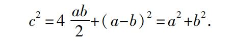
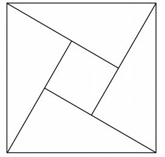
尽管承认毕达哥拉斯使用了这种一般证明存在困难，它当然适用于其边可公度和不可公度的直角三角形，但是，我认为没有人反对在最初有理直角三角形的情形（例如，3，4，5），命题的证明是使用这种类型的证明．当边可公度时，正方形可分为一些小正方形，这就很容易比较它们．这种细分实际上来源于增大和缩小正方形，而这可能是由亚里士多德在Physics Ⅲ.4中作出的把奇数作为磬折形围着单位正方形放置以形成逐次增大的正方形，这就意味着正方形是用点排成的形式表示的，而磬折形是由围着它的点构成的，或者磬折形被划分为单位正方形．塞乌腾（Zeuthen）已经指出，对于三角形3，4，5用这种方法，命题是多么容易证明，为了使两个较小的正方形边接着边，取一个长为7（=4+3）个单位的线段上的正方形，并且把它划分为49个小正方形．显然，大正方形可以看成由四个边为4，3的矩形（绕着这个图形）以及在中间的一个单位正方形构成（康托尔用这个图形来说明在中国的《周髀算经》中给出的方法），容易看出：
（Ⅰ）大正方形（72）是由两个正方形32和42以及两个矩形3，4构成的．
（Ⅱ）同一个正方形是由正方形EFGH以及四个同样的矩形3，4的一半构成的，因而，正方形EFGH必然包含25个单位正方形，并且等于两个正方形32与42的和，或者说每个矩形的对角线包含5个单位的长度．
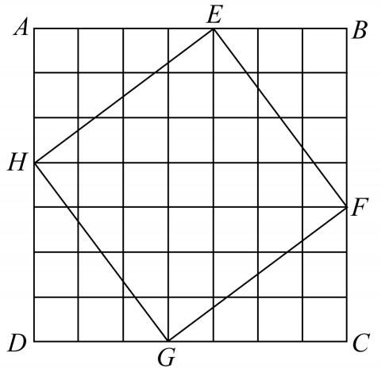
这个结果同样可由下述观察得到：
（Ⅰ）矩形的对角线上的正方形EFGH是由四个矩形的一半以及中心的单位正方形构成的，并且
（Ⅱ）放在大正方形相邻角落的两个正方形32及42由两个矩形3，4以及中心的单位正方形构成．
这个程序对有理三角形同样适用，并且一旦真正看到像3，4，5这样的三角形确实包含一个直角时，这就是证明这个性质的一个自然的方法．
塞乌腾（Zeuthen）在同一论文中给出了另一种方法，把矩形细分为相似的小矩形，我给出这个方法只是为了兴趣，它对那些第一次证明这个特殊三角形的这个性质的人来说无疑是太高级了．
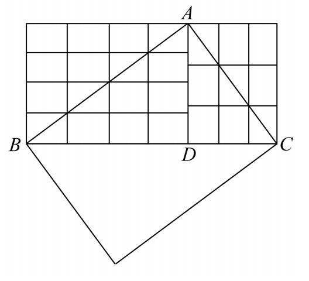
设ABC是一直角三角形，直角顶点为A，边AB和AC的长分别是4和3个单位．作高AD，并把AB，AC划分为单位长，过分点作BC和AD的平行线，把矩形分为一些小矩形．
因为这些小矩形的对角线都等于单位长，所以这些小矩形都相等．以AB为对角线的矩形包含16个小矩形，以AC为对角线的矩形包含9个小矩形．
因为三角形ABD与ADC的和等于三角形ABC，所以以BC为对角线的矩形包含9+16=25个小矩形．因而，BC=5．
从算术观点来看有理直角三角形
毕达哥拉斯研究了这样的算术问题，求可以构成直角三角形的边的有理数，或者说求可以表示为两个平方数的和的平方数．在此，我们发现了不定分析的开端，丢番图（Diophantus）使不定分析达到一个很高的程度．普罗克洛斯把毕达哥拉斯的解法表述为下面一段话：“发现这类三角形的某些方法留传下来，一个属于柏拉图（Plato），另一个属于毕达哥拉斯．后者是从一个奇数开始，由于它可以作为较小的直角边；而后，取它的平方，减去单位，并把差的一半作为较大的直角边；最后，再给它加一个单位以构成斜边．例如，取3，平方它，从9减去1，再取8的一半，即4，再给它加1，得5，于是构成了边为3，4，5的直角三角形．但是，柏拉图的方法是从偶数开始的，以它为一条直角边，而后，取这个数的一半，并且平方它，再加上1以构成斜边，减去1以构成另一个直角边．例如，取4，它的一半是2，平方它得到4，减1得到3，加1得到5．于是构成同样的三角形．”
如果m是一个奇数，毕达哥拉斯的公式是
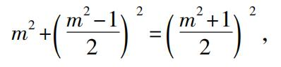
这个直角三角形的边是
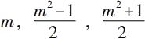
．康托尔采用罗思（Röth）的意见（Geschichte derabendiändlschen Philosophie，Ⅱ. 527），给出毕达哥拉斯公式来源的如下解释．如果c2=a2+b2，那么a2=c2-b2=（c+b）（c-b）.
要满足这个方程的数，必须是（1）c+b和c-b两个同时为偶数或者同时为奇数；（2）c+b和c-b相乘后是一个平方数．第一个条件是必需的，由于为了使和都是整数，其和与差c+b与c-b必须同时是偶数或同时是奇数．满足第二个条件的数称为相似数（similar numbers）；这样的数在柏拉图之前普遍知道，可能来自斯买拉（Smyrna）的泰奥恩（Theon）（Expositio rerum mathematicarum ad legendum Platonem utilium，ed. Hiller），他说相似平面数首先是所有平方数，其次是这样的长方形数（oblong numbers），包围它们的边是成比例的．例如，6是一个长方形数，它的长是3，而宽是2，24也是一个长方形数，它的长是6，而宽是4，因为6比3等于4比2，所以，6和24是相似数．
最简单的相似数是1和a2，因为1是奇数，所以，条件（1）要求a2，因而a也是奇数．我们可以把它们取为1和（2n+1）2，并且使它们分别等于c-b和c+b，因而，我们有
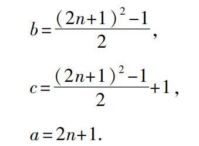
正如康托尔所说，c和b的形式相当接近普罗克洛斯的教科书中的描述．
另一种可能性是令c-b=2（不是c-b=1），此时相似数c+b必然等于某个平方数的2倍，即2n2或者偶平方数的一半，即
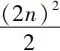
．这就给出a=2n，
b=n2-1，
c=n2+1，
这正是由普罗克洛斯给出的柏拉图解．
这两个解相互补充，有意思的是由罗思及康托尔所提示的方法很像欧几里得卷Ⅹ中的命题28之后的引理1．我们将在后面讨论这个，应当在此指出，问题是要找到两个平方数，使得它们的和也是一个平方数．欧几里得在那里使用了ii.6的性质，如果AB被C平分并且延长到D，则
AD·DB+BC2=CD2，
可以写成 uv=c2-b2，
其中 u=c+b，v=c-b.
为了使得uv是一个平方数，欧几里得指出，u和v必须是相似数，并且u和v必须同时是奇数或者同时是偶数，以便b是一个整数．我们可以把相似数写为αβ2和αγ2，我们得到解
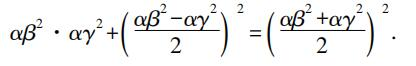
但是，我认为对康托尔和罗思的猜想有一个重要的反对意见，这个方法能够很容易地导出毕达哥拉斯及柏拉图三角形系列．如果这个方法已被毕达哥拉斯使用，我认为，它就不会留给柏拉图去发现第二个这种三角形系列．我似乎认为毕达哥拉斯可能使用了某种方法只产生他自己的规则，并且这个方法不太深奥，可能由直接观察提示而不是从一般原理推出．满足这个条件的一个解答是由布莱茨耐德（Bretschneider）提出的下述简单方法．毕达哥拉斯当然注意到逐次增长的奇数是磬折形，或者是逐次增长的平方数的差．而后用一个简单的方式写下三行：（a）自然数，（b）它们的平方，（c）逐次增长的奇数，它们是行（b）的相邻数的差；
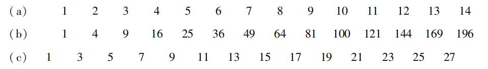
而后，毕达哥拉斯只取出第三行中的平方数，他的规则是找到一个公式把第三行中的平方数与第二行中与它相邻的平方数联系起来，即使这个要求一点推理，但是大部分来自纯粹的观察，一个较好的提示来自特里乌勒（Treutlein，P.）（Zeitschrift für Mathematik und physik ⅩⅩⅧ.，1883，Hist.-litt. Abtheiluug）．
我们有很多证据（例如，斯买拉的泰奥恩）用点或者符号表示正方形数（平方数），以及用点或者符号排成特殊形状来表示其他图形数，例如，长方形数，三角形数，六角形数（Cf. Aristotle，Metaph. 1092 b 12）．于是，特里乌勒说，容易看出，为了把正方形数转换为下一个较高的正方形，只要把一行点围绕两个相邻的边放成一个磬折形（见下面的图）．
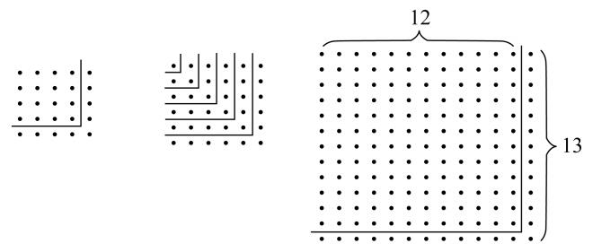
如果a是一个特定的正方形的边，则围绕它的磬折形有2a+1个点或者单位．现在，为了使得2a+1本身是一个平方数，假设
2a+1=n2，
因而
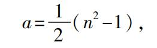
并且
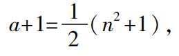
为了使得a和a+1是整数，n必然是奇数，我们有毕达哥拉斯公式．
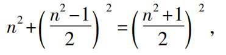
我认为特里乌勒的假设被证明是正确的，由于亚里士多德的《物理》已经引用了它，在那里参考文献无疑是毕达哥拉斯以及奇数明显地等于“围着1放置”的磬折形．但是，古代的评论使得事情更明显．菲洛波努斯（Philoponus）说：“作为证明……毕达哥拉斯注意到了增加数时所发生的情形，当奇数加到一个正方形数时，它们仍然是一个正方形……因而，奇数被称为磬折形，由于把它们加到正方形时，仍然保持正方形的形状……亚历山大（Alexander）明确地解释，‘当磬折形被绕着放置’的意思是用奇数作一个图形……，它正是毕达哥拉斯用图形表示事物的实践．”
下一个问题是：假定这是毕达哥拉斯公式的解释，那么，柏拉图公式的根源是什么？当然它可以看成欧几里得卷ⅹ的一般公式的一个特殊情形；但是，也有另外两个简单的解释：
（1）布莱茨耐德注意到，为了得到柏拉图公式，我们只要在毕达哥拉斯公式中把正方形的边变为2倍即可，
（2n）2+（n2-1）2=（n2+1）2，
而其中n不必是奇数．
（2）特里乌勒的解释是推广磬折形的概念．他说，毕达哥拉斯公式的获得是把一行点绕着正方形的两个相邻边放成一个磬折形，自然地，可以把两行点绕着正方形排列一个磬折形来求另一个解答．这样的磬折形也是把一个正方形变为一个较大的正方形，而问题是两行的磬折形是否本身是一个正方形．如果原来的正方形的边是a，容易看出，两行的磬折形的数是4a+4，并且我们只要令
4a+4=4n2，
因而 a=n2-1，
a+2=n2+1.
我们有柏拉图公式
（2n）2+（n2-1）2=（n2+1）2，
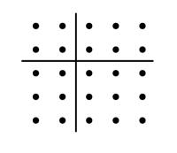
我认为在本质上这是一个正确的解释，但是在形式上不大正确．我认为希腊人没有把两行的看作磬折形．他们比较的是（1）一个正方形加上一个一行的磬折形和（2）同一个正方形减去一个一行的磬折形．因为应用欧几里得ii.4到边长为a，b=1的正方形能够得到毕达哥拉斯公式，像特里乌勒得到它一样，于是，我认为欧几里得ii.8证实了得到柏拉图公式是比较了一个正方形加上一个磬折形与同一个正方形减去一个磬折形，因为ii.8证明了
4ab+（a-b）2=（a+b）2，
因而，用1代替b，我们有
4a+（a-1）2=（a+1）2，
只要令a=n2，就得到了柏拉图公式．
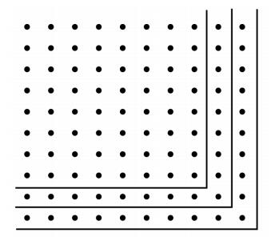
勾股定理在印度
这个问题最近几年再度被讨论，这是由布尔科（Albert Bürk）关于Das Ãpastamba-Šulba-Sūtra的两篇重要论文引起的．它们发表在Zeitschrift der deutschen morgenländischen Gesellschaft（lv.，1901，and lvi.，1902）．第一篇包含介绍与原文，第二篇包含翻译及注记．这些材料中最重要的部分是泰保特（Thibaut，G.）的论文，发表在Journal of the Asiatic Society of Bengal，XLIV.，1875，Part I.（reprinted also at Calcutta，1875 as The Šulvasūtras，by G. Thibaut）.在这个工作中，泰保特给出了分别由Bāudhāyana，Ãpastamba及Kātyāyana写的三篇关于Šulvasūtras的论文的摘要的有意义的比较，评论和时间的估计，以及印度几何的源泉．布尔科做了很好的工作，使得人们可以看到Ãpastamba的全部工作并且重新审查它．作为一个有热情的编辑者，他的工作不只包含了远在毕达哥拉斯之前（大约公元前580—500）的印度所有人知道的勾股定理的内容及证明，而且还说他们已经发现了无理数，并进一步说喜爱旅游的毕达哥拉斯可能从印度得到他的理论．随后有三个重要的注记和批评，分别来自：H. G. Zeuthen（“Théorème de Pyhagore”，Origine de la Géométrie scientifique，1904，already quoted），MoritZ Cantor（Über die älteste indische Mathematik in the Archiv der Mathematik und Physik，Ⅷ.，1905）and by Heinrich Vogt（Haben die alten Inder den Pythagoreischen LehrsatZ und das Irrationale gekannt? In the Bibliotheca Mathematica，Ⅶ3，1906. See also Cantor’s Geschichte der Mathematik，I3）.
这些批评是要说明在接受布尔科的结论时至少要有极大的警惕性．
我来给出Ãpastamba-Š.-S.的内容的一个简短的摘要，它与现在的内容有重要的联系．我首先要说，这本书的主要内容是说明如何建筑某些形状的祭坛，以及变化祭坛的大小而不改变形状，它是完成某些建筑的规则的汇集．没有证明，最接近证明的工作是获得等腰梯形面积的规则，从两条平行边的较小边的一个端点作一条较大边的垂线，而后取掉所画出的三角形并且把它倒过来放在梯形的另一个相等边上，这样就把梯形变成了矩形．同时注意，Ãpastamba没有说直角三角形，而是说一个矩形的两条相邻的边及对角线．为了简明起见，我将使用“有理矩形”来记这样一个矩形，它的两条边以及对角线都可以用有理数表示，括号内是Ãpastamba著作的章节及编号．
（1）用下述长度的绳索来构造直角：
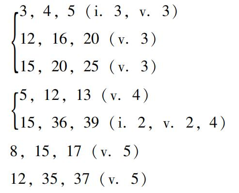
（2）勾股定理的一般表述：“一个矩形的对角线产生［即对角线上的正方形等于］较长边和较短边分别产生［即两个边上的两个正方形］的和．” （i.4）
（3）应用勾股定理于正方形（代替长方形）［即一个等腰直角三角形］：“正方形的对角线产生［原正方形的］二倍面积．” （i.5）
（4）的近似值：正方形的对角线是边的
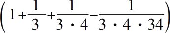
倍。 （i.6）（5）应用这个近似值来构造一个正方形． （ii.1）
（6）用勾股定理构造
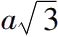
，作为边长a和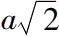
的矩形的对角线． （ii.2）（7）给出了下述等式：
（a）
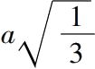
是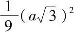
的边，或者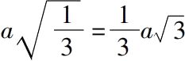
． （ii.3）（b）长为1个单位上的正方形给出1个单位面积 （iii.4）
长为2个单位上的正方形给出4个单位面积 （iii.6）
长为3个单位上的正方形给出9个单位面积 （iii.6）
长为
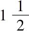
个单位上的正方形给出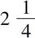
个单位面积 （iii.8）长为
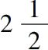
个单位上的正方形给出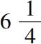
个单位面积 （iii.8）长为1/2个单位上的正方形给出1/4个单位面积 （iii.10）
长为1/3个单位上的正方形给出1/9个单位面积 （iii.10）
（c）一般地，任一长度上的正方形包含的行数与这个长度包含的单位数相同． （iii.7）
（8）用勾股定理作图
（a）两个正方形的和作为一个正方形． （ii.4）
（b）两个正方形的差作为一个正方形． （ii.5）
（9）变换一个矩形为一个正方形． （ii.7）
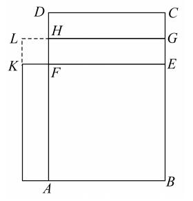
［这个不是像欧几里得在Ⅱ.14中那样直接作成，而是首先把矩形变换为一个磬折形，即变换为两个正方形的差，再把这个差用上述规则变换为一个正方形．如果ABCD是已给的矩形，较长边是BC，取掉正方形ABEF，并作HG平行于FE并且平分剩余的矩形DE，移动上半个矩形DG到矩形AK．那么，矩形ABCD就等于这个磬折形，它是正方形LB与正方形LF的差．换句话说，Ãpastamba变换矩形ab为正方形
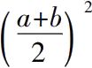
与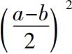
的差．］（10）变换正方形（a2）为一个矩形，矩形的一条边是已给长（b）． （iii.1）
［这里没有像欧几里得Ⅰ.44那样的程序，实际上是从a2减去ab，而后把剩余的a2-ab改变成能“安装”在矩形ab上的矩形．因而，这个问题归结为另一个同类问题，后面这个问题当a，b是给定的数值时已经算术地得到解决．因而，印度人距离这个问题的一般的几何解答还很远．］
（11）把一个已给的正方形增大为一个较大的正方形． （iii.9）
［这等于说增加两个矩形（a，b）和一个正方形（b2），使得正方形a2变换为（a+b）2，这是欧几里得ii.4中的公式a2+2ab+b2=（a+b）2］．
与上述有关的第一个重要问题是时间问题．布尔科认为Ãpastamba-Šulba-Sūtra的年代至少早于公元前5世纪或4世纪．他也注意到书中的材料要比书本本身早得多，并且，他指出关于用长15，36，39的绳索构造直角的问题早在Tāittirīya-Samhitā及Satapatha-Brāhmana时代就已经知道，至少属于公元前8世纪的工作．但是，布尔科承认发现以有理数a，b，c为边并且满足a2+b2=c2的三角形是直角三角形这件事在印度不会如此的早．然而，我们发现两本古代中国的专著中有：①一个命题，矩形（3，4）的对角线是5；②从直角三角形的边求斜边的规则，通常把这两个工作与周公（卒于公元前1105年）的名字相联系．（D. E. Smith，History of Mathematics）．
应当注意，Ãpastamba用到的7个“有理矩形”中，有两个，即8，15，17及12，35，37不属于毕达哥拉斯序列，其中两个，即3，4，5及5，12，13及其他们的倍数属于毕达哥拉斯序列．当然，正像塞乌腾所指出的，ii.7及iii.9［上面编号为（9）和（11）］的规则提供了寻求任意多个“有理矩形”的方法．但是，好像印度人没有构成它的任何一般规划，否则，他们列举的这种矩形不会如此的少．Ãpastamba仅提及了7个，实际上只能归结为4个（虽然还有另外一个7，24，25，出现在Bāudhāyana S'.-S工作中，可能早于Ãpastamba）．这些就是Ãpastamba知道的所有“有理矩形”，他在（ⅴ.6）中还说：“就有这么多可辨别的构造”，这隐含着他不知道其他的“有理矩形”．但是，这句话也隐含着对角线上的正方形的定理对另外一些矩形也是真的，这些矩形不属于“可辨别类型”，即其边和对角线不是整数的比．实际上这隐含着对于
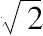
，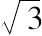
等，一直到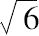
的构造（参考ii.2，viii.5），这就是我所要说的一切．这个定理可以看作一个一般的命题，但是没有任何标记它有一个一般证明，没有任何东西证明它的普遍的真实性的来源好于不完善的归纳法，从经验上发现一些其边是整数比的三角形具有性质（1）最长边上的正方形等于其他两个边上的正方形的和总是伴随着性质（2）后面两条边包含一个直角．剩下来考虑布尔科宣称印度人发现了无理数，这基于的近似值，Ãpastamba在规则i.6［上面编号为（4）］中给出，没有任何东西说明这个近似值是如何得到的，但是，泰保特的提示似乎是最好和最自然的．印度人可能注意到172=289大约是122=144的2倍，如果是这样，下一个问题自然是边17减少多少才能使得在它上面的正方形正好是288，依据印度人的习惯，应当从边为17的正方形减去其面积为一个单位的磬折形，这个可以由磬折形的宽大约为1/34来保证，由于
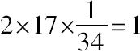
，于是这个较小正方形的边就是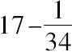
=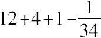
，再除以12，近似地有，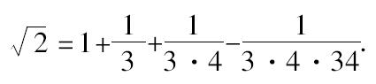
但是，从这个近似值的计算到无理数的发现还有遥远的距离．首先，我们要问是否存在任何标志说明这个值是不精确的？在命题（i.6）“一个正方形的对角线上的正方形二倍于这个正方形”的后面直接说：“把单位长增长三分之一，并且把后者再增长本身的四分之一，再减去这一部分的三十四分之一．”对这个规则的合理性没有作出任何说明，而且这个近似规则实际上用于构造其边在（ii.1）中给出的正方形．这个公式是如此地熟悉，它曾经作为细分一个长度的根据．泰保特注意到（Journal of the Asiatic Society of Bengal XLIX）Bāudhāyana曾经把单位长分割为12个手指宽的小段，并且把一个小段分为34个芝麻粒宽的小段，并把这个细分归功于的公式．这个细分用在边长为12个手指宽的正方形中，它的对角线就是17个手指宽减去1个芝麻粒宽，是否可以想象细分一个长度是基于一个已知不精确的估值？无疑，第一个发现者注意到宽为1/34，而外边长为17的磬折形不是正好等于1，而比1小1/34的平方（即1/1156），他没有把这个小分数算在内，因为整个过程的目的纯粹为了实用，略去这个在实用上没有多大关系．因而，这个公式留传下来并且没有怀疑它的精确性．这个假定可以证实，只要参考一类规则，印度人允许把它们看成是精确的．例如，Ãpastamba本人在构造一个其面积等于一个已知正方形的圆时，实际上取π=3.09，并且说这正好（exactly）是所求的圆（iii.2），而在构造“正好”等于一个圆的正方形时，取正方形的边等于这个圆的直径的13/15（iii.3），这等于取π=3.004．即使有人在使用的近似式时意识到它不是很精确的（关于这个没有证据），有这种意识与发现无理性有重大的差别，正像Vogt所说，正方形对角线的无理性的发现之前必须通过三个阶段：①必须认识到所有由直接测量或者基于它的计算的数值都是不精确的．②必须深信不可能得到这个值的一个精确的算术表达式．③不可能性必须得到证明．现在，没有任何真实的证据证明印度人那时已经达到了第一阶段，更缺少第二和第三阶段．
布尔科的论文及其批评的最终结果是：①必须承认印度几何已经达到在Ãpastamba书中可以找到的这样一个阶段，并且它与希腊的影响无关．②古老的印度几何纯粹是经验的和实践的，远离像无理数这样的抽象性．事实上，印度人用特殊情形的试验使他们自己相信勾股定理的真实性并且宣称它的一般性；但是，他们没有建立它的科学证明．
其他证明
Ⅰ.一个有名的证明i.47是把两个正方形边靠着边，底相连，并且把直角三角形放在不同的位置上，这个归功于Thābit ibn Qurra（约826—901）．
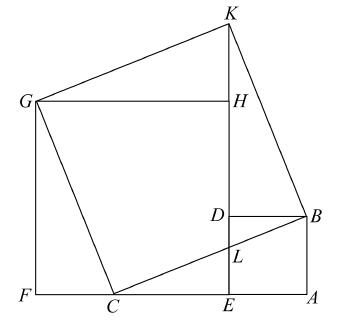
他的实际构造如下：设ABC是已知三角形，直角在A．在AB上作正方形AD，延长AC到F，使得EF等于AC．
在EF上作正方形EG，延长DH到K，使得DK等于AC．
而后证明在三角形BAC，CFG，KHG，BDK中，边BA，CF，KH，BD都相等，并且边AC，FG，HG，DK也都相等．
这些相等边包含的全都是直角，因而，这四个三角形是全等三角形．
故BC，CG，GK，KB都相等．
角DBK和角ABC相等，因而，如果我们对每个加一个角DBC，则角KBC等于角ABD，所以角KBC是直角．
同样地，角CGK是直角，因而，BCGK是正方形，即BC上的正方形．
现在，把四边形GCLH和三角形LDB放在一起，若再加上两个相等的直角三角形就形成AB，AC上的两个正方形；若再加上另外两个相等的直角三角形就形成BC上的正方形．
因而，等等．
Ⅱ.另一个证明是下述帕普斯（Pappus）更一般命题的特殊情形，此时已知三角形是直角三角形，直角边上的平行四边形是正方形．如果画出这个图形，那就容易看出，再增加一根线，它就包含了Thābit的图形，因而，Thābit的证明可以从帕普斯的证明导出．
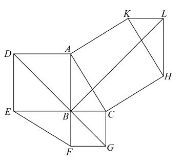
Ⅲ.最有趣的证明如下页右图所示，它是由米勒（Müller，J. W.）给出的［Systematische Zusammenstelung der wichtigsten bisher bekannten Beweise des Pythag. LehrsatZes（Nürnberg，1819），and in the second edition（MainZ，1821）of Ign. Hoffmann，Der Pythag. LehrsatZ mit 32 theils bekannten theils neuen Beweisen（3 more in second edition）］它好像来自Lionardo da Vinci（1452—1519）的一篇科学论文．
在KH上作三角形HKL，使其边KL等于BC，边LH等于AB．
因而，三角形HLK与三角形ABC及三角形EBF全等．
现在，DB，BG分别平分角ABE，CBF，并且在一条直线上，连接BL．
容易证明，四个四边形ADGC，EDGF，ABLK，HLBC都是全等的．
因而，两个六边形ADEFGC，ABCHLK是全等的．
从前者减去两个三角形ABC，EBF，而从后者减去两个全等的三角形ABC，HLK，就证明了正方形CK等于两个正方形AE，CF的和．
帕普斯关于i.47的推广
在这个优美的推广中，三角形可以是任意三角形（不必是直角三角形），而且任意平行四边形代替了两条边上的正方形．帕普斯的定理如下：
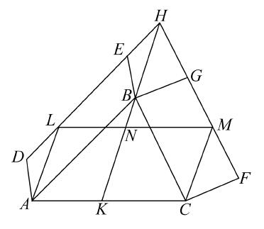
若ABC是一个三角形，在AB，BC上分别画两个任意的平行四边形ABED，BCFG，延长DE，FG到H，连接HB，则这两个平行四边形ABED，BCFG等于由AC和HB形成的平行四边形，其夹角等于角BAC与角DHB的和．
延长HB到K，过A，C作AL，CM平行于HK，并连接LM．
因为ALHB是平行四边形，所以AL，HB平行且相等．
类似地，MC，HB平行且相等．
因而，AL，MC平行且相等，故LM，AC平行且相等，并且ALMC是平行四边形．
这个平行四边形的角LAC等于角BAC，DHB的和，由于角DHB等于角LAB．
现在，平行四边形DABE等于平行四边形LABH（因为它们同底AB且同高）．
类似地，LABH等于LAKN（因为它们同底LA并且同高）．
因而，平行四边形DABE等于平行四边形LAKN．
同样地，平行四边形BGFC等于平行四边形NKCM．
因而，两个平行四边形DABE，BGFC的和等于平行四边形LACM，即等于由AC，HB形成的其夹角是角BAC，角DHB之和的平行四边形．
“并且这个远比在《原本》中证明的在直角三角形中关于正方形的定理更一般．”
海伦（Heron）证明在欧几里得的图中，AL，BK，CF三线交于一点
普罗克洛斯关于i.47的注记的最后一段话具有历史意义．他说：“由《原本》的作者所做的证明是明白无误的，我认为不必再附加任何东西，并且我们满意所写的一切，因为，事实上那些已经附加一点东西的人，像帕普斯和海伦，被迫去注释卷Ⅵ中已证明的东西，因为此处没有再需注释的东西．”这些话当然不是指帕普斯关于i.47的推广，但是，与他们有关的重要事情是在NairīZī关于i.47的评论中找到海伦证明欧几里得图中的三线AL，FC，BK交于一点．海伦证明这个基于三个引理，这些引理可以自然地从类似于卷Ⅵ的原理来证明，但是，海伦用他的绝技证明了这些，仅用卷Ⅰ的原理．第一个引理如下：
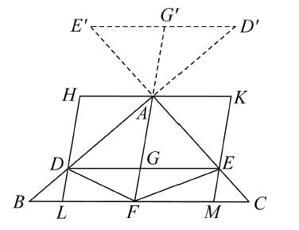
在三角形ABC中，若作DE平行于底BC，并且作AF，F是BC的中点，则AF也平分DE．
过A作HK平行于DE或BC，过D，E分别作HDL，KEM平行于AGF，连接DF，EF．
三角形ABF，AFC相等（等底同高），并且三角形DBF，EFC也相等（等底同高）．
因而，三角形ADF，AEF相等（等量减等量），平行四边形AL，AM相等．
这两个平行四边形在同一平行线LM，HK之间，因而，LF，FM相等，DG，GE相等．
第二个引理是把这个引理扩张到DE与BA，CA的延长线相交的情形．
第三个引理证明了欧几里得i.43的逆，若平行四边形AB分为四个平行四边形ADGE，DF，FGCB，CE，使得平行四边形DF，CE相等，则公共顶点G将在对角线AB上．
海伦延长AG交CF于H，连接HB，我们必须证明AHB是一条直线．证明如下：
因为面积DF，EC相等，所以三角形DGF，ECG相等．如果我们对每一个加上三角形GCF，则三角形ECF，DCF相等，因而ED，CF平行．
现在，从i.34，29，26推出，三角形AKE，GKD全等，因而EK等于KD．
由引理2，CH等于HF．
因而，在三角形FHB，CHG中，两条边BF，FH等于两条边GC，CH，并且角BFH等于角GCH，故这两个三角形全等，并且角BHF等于角GHC，对每一个加上角GHF，我们得到角BHF，FHG分别等于角CHG，GHF，故角BHF与角FHG的和等于两直角．
因而，AHB是一条直线．
海伦现在来证明这个命题：在下页右图中，若AKL垂直于BC交EC于M，连接BM，MG，则BM，MG在同一条直线上．
如图作一些平行四边形，连接平行四边形FH的对角线OA，FH．
显然，三角形FAH与三角形BAC全等．因而，角HFA等于角ABC，也等于角CAK（由于AK垂直BC）．
矩形FH的两条对角线交于Y，FY等于YA，并且角HFA等于角OAF．
因而角OAF，CAK相等，故OA，AK在一条直线上，OM是矩形SQ的对角线，从而，矩形AS等于矩形AQ．并且，若给每一个加矩形AM，则矩形FM等于矩形MH．
因为EC是平行四边形FN的对角线，所以矩形FM等于矩形MN．
因而，矩形MH等于矩形MN，再由第三个引理，BM，MG在一条直线上．
[1]译文选自T.L.Heath：The Thirteen Books of Euclid’s Elements（Dover Publications，Inc.New Yock，1956），其中的小体辅文是Heath的评注，脚注①、②…是汉译者的注释（下同）．
[2]不一定是直线．
[3]到此原文中无“半径”两字出现，此处“距离”即圆的半径．
[4]这就是大家提到的欧几里得第5公设，即现行平面几何中的平行公理的原始等价命题．